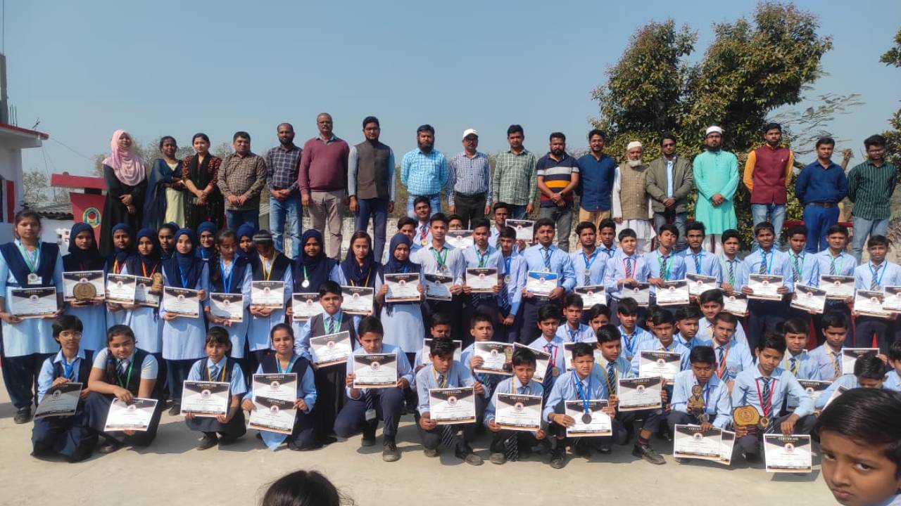
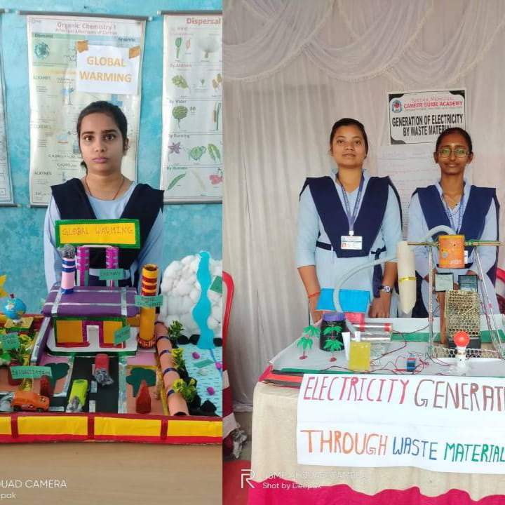
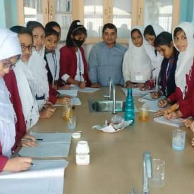
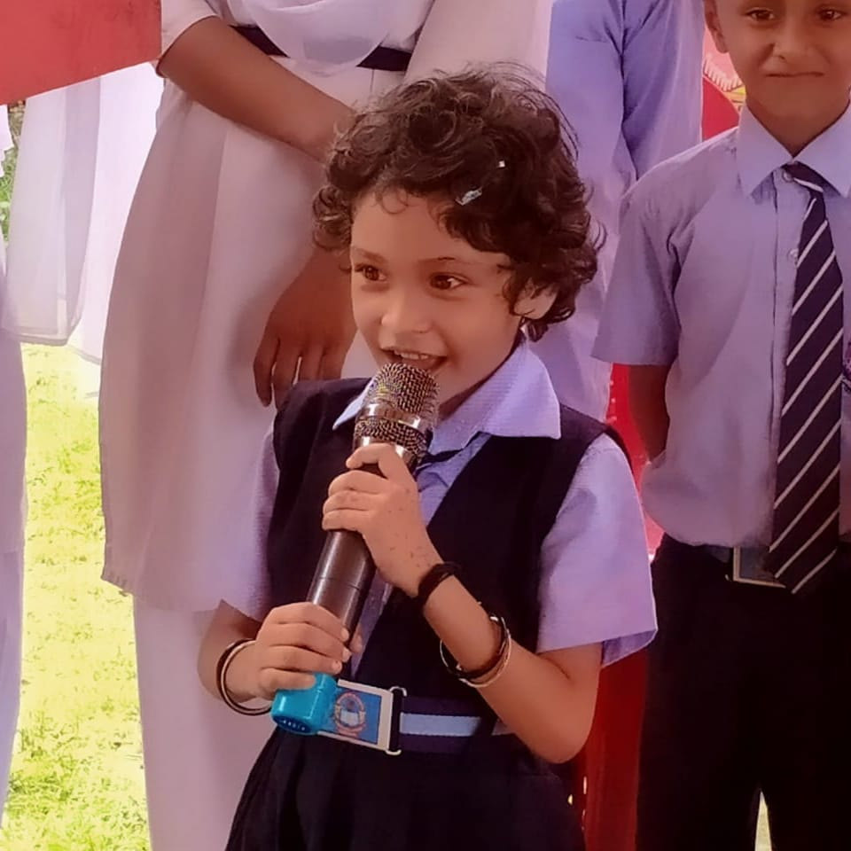

WELCOME TO THE WEBSITE OF
SIBTAIN MEMORIAL CARRER GUIDE ACADEMY
The Sibtain memorial Career Guide Academy was founded in 1996 by Prof. Raqueeb Ahmad with the help of Md. Iqubal (Alig). Abrar Ahmad and Syed Shamim Anwar with the aim of providing a sound modern education to boys and girls without prejudice to their religion, caste, creed, and culture. It is essentially a "RESIDENTIAL" institution, where character formation and inculcation of religious and moral principles are of prime concern.Career Guide Academy is a Co-Ed school affiliated to Central Board of Secondary Education (CBSE). It is managed by Quayam Educational And Welfare trust.

Facilities
❖ Scientifically design CBSE based Curriculum as per NEB guideline.
❖ Learning modules that enhance concept assimilation.
❖ Interactive, Activity based teaching.
❖ Fun Projects to ignite competitive sprits and Scientific Curiciosity.
❖ Continuous and comprehensive evolution.
❖ A 360 Degree learning environment and innovative teaching methodologies.
❖ Olympiad programme for state and National level.
❖ Keeping parents informed about school and student related updates..
Education
■ S kidz Programme (Nursery, LKG & UKG).
■ S Champs Programme (CLASS-I to V).
■ S Techno Programme (Class VI to Class-IX).
❖ Character Building.
❖ Communication Skill.
❖ Subject Mastery.
❖ Conceptual Skills.
❖ Scientific Skills.
❖ Leadership skills.
❖ problem Solving Skills.
❖ Empathy and team work skills.
❖ Social Etiquette & Interpersonal relationship skills.



Improvement
■ All-round Development of the Child.
■ Art, Rhymes, Games, Hands on Activities field trips. Our dedicated team of
teachers Engages in Activity based Learning, interactive reading
courses
and more to cater to the unique.
■ Personal, physical, Social and Emotional developmen
Creativity and thinking skills our commitment.
■ In our commitment to Engage and Captivate our young learners,
we have directed our Attention towards Several Key words,
Thoughtfully crafted micro-schedules.
■ Utilisation of creative teaching and learning materials to reinforce sensorial
leaming.
■ Expression inrough various avenues such as art, music, dance and sports etc.
Our main Teaching methodologies Exploring Playing And Growing.
.